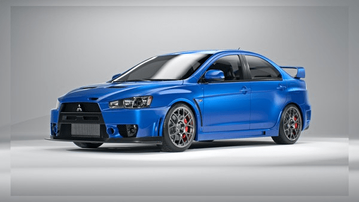

Descubra o Carro dos Seus Sonhos.
Navegue por nossa vasta coleção e encontre o veículo perfeito para você. Qualidade, inovação e estilo em cada detalhe.
Lancer Evolution X
Sobre o carro:
A Mitsubishi lançou em janeiro de 2007 a décima geração do Lancer Evolution. Este agora conta com novo motor 4B11T 2.0L (1 998 cc) turbo construído totalmente em alumínio. A potência e o torque dependem muito do mercado, mas todas as versões contam com 280 cv ou mais. Nos Estados Unidos, conta com duas versões diferentes. A MR, com transmissão semiautomática TC-SST de seis velocidades e dupla embreagem e a GSR, com transmissão manual de cinco velocidades. O carro também conta com um sistema de tração integral novo, chamado S-AWC (Super All Wheel Control) que controla o envio de torque, potência e frenagem de maneira individual às rodas. Também conta com a nova transmissão de dupla embreagem e seis velocidades da Mitsubishi com trocas por botões atrás do volante (paddle shifters), airbags frontais, laterais, de cortina e para o joelho do motorista. Os faróis são de regulagem automática, dependendo do ângulo de esterçamento das rodas e da velocidade do veículo. A qualidade do interior, da condução e dos níveis de ruído tiveram melhoras.
video sobre o veiculo:Essa foi a nossa apresentação do Lancer Evolution X